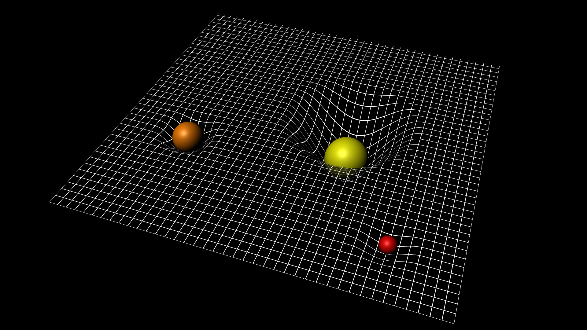
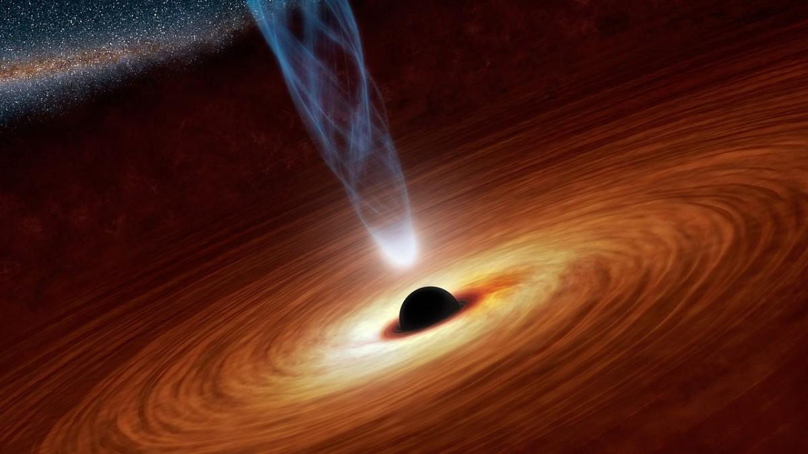
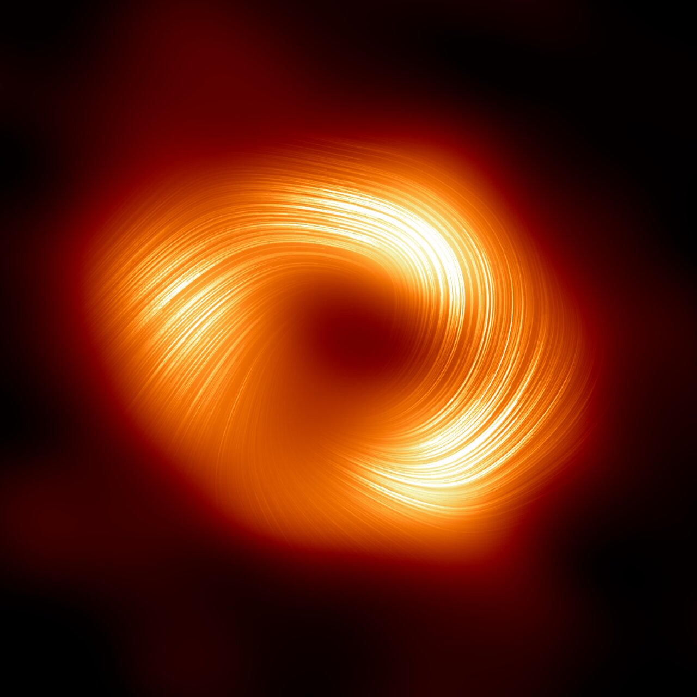

Schwarze Löcher
Komplexe Objekte im Weltall
Magnus Tangen · Gymnasium Marianum Meppen · 2025/2026
Fragestellung und Inhalt
Wie entstehen Schwarze Löcher, aus welchen Komponenten bestehen sie, und welche physikalischen Effekte verursachen sie im Kosmos?
Einleitung
- Regionen im Weltraum mit extrem konzentrierter Masse
- Gravitation so stark, dass nichts entkommt - nicht einmal Licht
- Direkte Beobachtung unmoglich; Nachweis erfolgt indirekt durch Effekte auf Sterne, Gas und Galaxien
- Thema verbindet Allgemeine Relativitatstheorie, Astrophysik und Quantenmechanik
Ziel: Entstehung, Aufbau und Wirkung verstandlich darstellen - ohne uberflussige Formeln.
Allgemeine Relativitatstheorie
- Albert Einstein (1915): Gravitation als Krummung von Raum und Zeit
- Erweiterung auf beschleunigte Systeme (nicht nur konstante Geschwindigkeit)
- Grundprinzipien:
1. Relativitatsprinzip
2. Konstanz der Lichtgeschwindigkeit (c ~ 299.792 km/s) - Raumzeit als 4D-Kontinuum: Masse "deformiert" das Universum wie eine Kugel auf einem Gummituch

Was ist ein Schwarzes Loch?
- Keine klassische Oberflache wie ein Planet oder Stern
- Extreme Masse auf minimalem Raum konzentriert -> unendliche Dichte im Zentrum
- Grenze zum Universum: der Ereignishorizont
- Erkennbar nur durch:
• Bewegung umliegender Sterne
• Akkretionsscheiben (Rontgenstrahlung)
• Gravitationslinsen und Jets
Entstehung: Lebenszyklus von Sternen
Geburt
Wasserstoffgas kollabiert durch Gravitation. Dichte und Temperatur steigen.
Hauptphase
Gleichgewicht zwischen Gravitation und Strahlungsdruck halt den Stern stabil.
Tod
Brennstoff erschopft -> Kollaps. Bei >30 Sonnenmassen: Schwarzes Loch.
Wahrend der Hauptphase verschmelzen Wasserstoffkerne zu Helium. Die Sonne hat noch ca. 5 Milliarden Jahre Brennstoff.
Der Tod massereicher Sterne
Weisser Zwerg
< 1,4 Sonnenmassen (Chandrasekhar-Grenze). Der Elektronen-Degenerationsdruck halt den Kollaps auf.
Neutronenstern
~10 Sonnenmassen. Neutronen-Degenerationsdruck stabilisiert den Kern. Dichte: Hunderte Tonnen pro cm3.
Schwarzes Loch
>30 Sonnenmassen. Supernova-Explosion stosst aussere Schichten ab. Kern kollabiert zu einem Punkt unendlicher Dichte.
Wachstum von Schwarzen Löchern
1. Akkretion
Anziehung von Gas und Staub aus einer Scheibe. Die Materie heizt sich durch Reibung auf und wird aufgenommen.
2. Verschmelzung
Zwei Löcher kreisen einander, senden Gravitationswellen aus (LIGO/Virgo) und verschmelzen zu einem grosseren Loch.
3. Sternverschlingung
Tidale Krafte spalten Sterne auf. Die Materie wird akretiert und vergrossert das Loch massiv.
Hinweis: Wachstum durch kosmische Expansion bleibt umstritten.
Arten von Schwarzen Löchern
Primordiale
Entstanden kurz nach dem Big Bang durch Dichteschwankungen. Hypothetisch, keine direkten Beobachtungen.
HypotheseStellare
Die haufigste Art. Entstehen aus dem Kollaps massereicher Sterne. Radius: 10-300 km. Ca. 10-100 Millionen in der Milchstrasse.
Haufigste ArtSupermassive
In fast allen Galaxienzentren. Sagittarius A*: 4 Millionen Sonnenmassen. Entstehung noch unklar.
GalaxienzentrenUltramassive
Extrem selten. TON 618: ~66 Milliarden Sonnenmassen. Nur in massereichsten Galaxien.
RekordhalterDer Ereignishorizont
- Kugelformige Grenzflache (nicht ringformig!)
- Ab diesem Radius entkommt nichts mehr - nicht einmal Licht
- Radius proportional zur Masse (Schwarzschild-Radius)
- Fur Aussenstehende: Keine Informationen aus dem Inneren erhaltenbar

Akkretionsscheiben & Jets
- Akkretionsscheibe: Gas rotiert um das Loch, heizt sich durch Reibung auf -> Rontgenstrahlung
- Drehimpulserhaltung verhindert direktes Fallen
- Relativistische Jets: Plasma-Strahlen nahe der Lichtgeschwindigkeit
- Blandford-Znajek-Mechanismus: Magnetfelder entziehen Rotationsenergie

Singularitat & Hawking-Strahlung
- Singularitat: Zentrum mit unendlicher Dichte und Raumzeitkrummung - physikalische Gesetze brechen zusammen
- Nicht-rotierend: Punkt-Singularitat | Rotierend: Ring-Singularitat
- Hawking-Strahlung: Am Horizont entstehen Teilchen-Antiteilchen-Paare; ein Partner entkommt, der andere fallt hinein
- Resultat: Langsamer Masseverlust uber extrem lange Zeitraume (Verdampfung)
Hinweis: Bei heutigen Löchern uberwiegt die Aufnahme von kosmischer Hintergrundstrahlung noch den Verlust.
Eigenschaften
Schwarze Löcher haben keine Haare - No-Hair-Theorem
Masse
Bestimmt die Gravitationsstarke und die Ausdehnung des Horizonts. Masse ist nicht gleich Grosse!
Drehimpuls
Rotation erzeugt Frame Dragging in der Ergosphere und treibt Jets an.
Ladung
Praktisch neutral, da entgegengesetzte Ladungen schnell ausgeglichen werden.
Effekte auf Raum und Zeit
- Zeitdilatation: Je näher am Horizont, desto langsamer vergeht die Zeit für externe Beobachter
- Beispiel Film "Interstellar" (2014): Stunden auf dem Planeten = Jahrzehnte im Raumschiff
- Frame Dragging: Rotierende Löcher ziehen Raumzeit mit sich – erzwingt Mitrotation in der Ergosphere
- Gravitationslinsen: Licht hinter dem Loch wird gebogen → sichtbarer Einstein-Ring

Spaghettifizierung
- Gezeitenkrafte: Gravitation wirkt starker an der dem Loch zugewandten Seite
- Objekte werden in die Lange gezogen und auseinandergerissen
- Roche-Grenze: Abstand, ab dem dieser Effekt einsetzt
- Kleine stellare Löcher: Zerreissen passiert vor dem Horizont
- Supermassive Löcher: Effekt am Horizont milder - Uberschreitung theoretisch ohne Zerreissen moglich
Beobachtungen
- Event Horizon Telescope (EHT): Erstes Bild 2019 (M87*), 2022 (Sagittarius A*)
- Sagittarius A*: 4 Millionen Sonnenmassen, 27.000 Lichtjahre entfernt
- TON 618: ~66 Milliarden Sonnenmassen - eines der grossten bekannten Löcher
- Hinweis: Phoenix A* mit ~100 Mrd. Sonnenmassen ist noch massereicher

Fazit & Ausblick
Zusammenfassung
Schwarze Löcher entstehen durch Kernkollaps, wachsen durch Akkretion und Verschmelzung, und verandern Raumzeit durch extreme Gravitation.
EHT & Gravitationswellen
Neue hochaufgeloste Bilder und Magnetfeld-Daten. Gravitationswellen-Detektoren eroffnen neue Beobachtungsfenster.
Offene Fragen
Das Informationsparadoxon und die Natur der Singularitat bleiben grosse ungeloste Probleme der Physik.
Kritik an der Facharbeit
Verbesserungen auf Basis des Gutachtens
Quellen
Es wurden dieselben Quellen wie in der Facharbeit verwendet.
Dazu gehoren:
Fachliteratur: Hawking (2000, 2018), Bublath (1999)
Internetquellen: ESA, NASA/JPL, Spektrum der Wissenschaft, Welt der Physik, StudySmarter, Wikipedia
Filmquelle: Interstellar (Christopher Nolan, 2014)